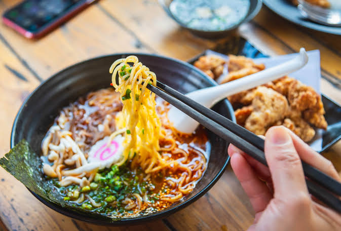

Визначні пам'ятки

Перехрестя Шібуя, давній храм Сенсо-джі в Асакуса та гік-район Акіхабара — обов'язкові місця для відвідування.
Кухня та гастрономія

Свіжі суші на ринку Тойосу, десерти з чаєм матча та вуличні кульки такоякі дарують унікальний гастрономічний досвід.
Культура та традиції
У Токіо глибока повага до багатовікових традицій гармонійно поєднується з культурою аніме, інноваціями та робототехнікою.
Особисті враження
Прогулянка парком Уено під час сакурового цвітіння (ханамі) стала найчарівнішим моментом моєї мандрівки Японією.